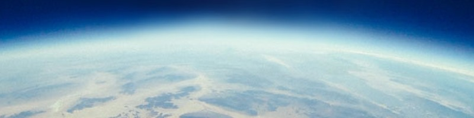
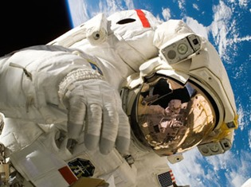

SpaceWalkers

Lift Off
As we got further and further away,it [the Earth] diminished in size. Finally it shrank to the size of a marble,the most beautiful you can imagine. That beautiful,warm,living
object looked so fragile,so
delicate that if you touched it with a finger it would fall apart.Seeing this has to change a man.
Can We Visit Planets?
Never in all their history have men been able to truly conceive of the world as one:a single sphere,a globe,having the qualities of a globe,a round earth in which all the directions eventually meet.Which there is no center because every point,or none, is center-an equal earth which all men occupy as equals. The airman's earth,if free men make it.
Let's Go For A Walk
The Earth was small,light blue,and so touchingly alone, our home that must be defended like a holy relic. The Earth was absolutely round.
Suddenly struck me that that tiny pea,pretty and blue, was the Earth.I put up my thumb and shut one eye, and my thumb blotted out the planet Earth.
